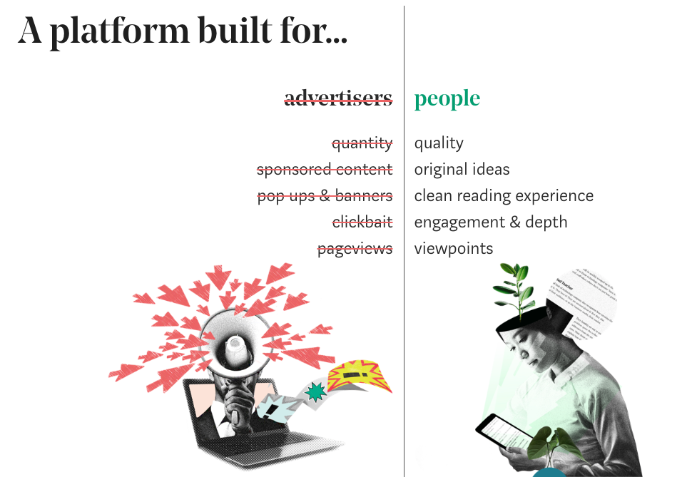
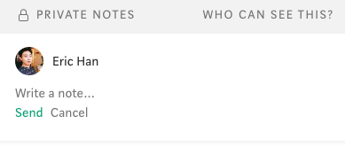

Medium, 글쓰기의 새로운 패러다임
이 블로그는 IT 와 개발에 관련된 주제를 블로그입니다. 기술 외적인 주제나 내 자신의 이야기를 쓰고 싶어졌고, 새로운 블로그를 만들기 위해서 서비스를 둘러봤습니다. '브런치’와 '미디엄(Medium)'이 제일 눈에 들어오더군요. 두 서비스 모두 글쓰기 자체에 초점을 맞춘 서비스였습니다. 그리고 브런치는 미디엄을 벤치마킹한 서비스라고 하더군요.
미디엄과 브런치를 비교하는 글들이 꽤 있었습니다. 읽어보고나서 저는 브런치에 새로운 블로그를 만들겠다고 결정했습니다. 미디엄은 우리나라 사용자가 별로 없어서 한글 컨텐츠가 부족했고, 한글 자체가 제대로 지원이 안되는 등 우리나라 사용자에게는 불편한 점이 많았기 때문입니다.
하지만 브런치를 사용하겠다 마음을 먹었음에도 미디엄에 자꾸 눈이 갔습니다. 미디엄의 고유한 기능에 대한 궁금증을 속 시원하게 해결하지 못했기 때문이죠. Response 나 Note 같은 기능들은 브런치에 존재하지 않았습니다. 이 기능들은 무엇이고 왜 만들어졌을까? 하는 의문이 생겼습니다.
그래서 일단 브런치는 접어두고 마음 가는 대로 미디엄에 대해서 좀 더 알아보기로 했습니다.
Medium

미디엄은 2012년 런칭한 서비스로, 구글의 블로그 서비스인 ‘블로거’와 마이크로 블로그 ‘트위터’를 만든 에반 윌리엄스가 만든 서비스로 유명합니다. 미디엄은 이 두 서비스의 장점을 합친 서비스라고 볼 수 있는데 기존의 블로그와는 다른 새로운 성격을 찾아볼 수 있습니다.
일반적인 블로그는 필자가 쓴 글을 저장하는데 초점이 맞춰져 있습니다. 특정 주제에 대한 필자의 생각을 잘 담아서 축적할 수 있는 저장소의 역할을 합니다. 자체로는 전파할 수 있는 기능이 없고 댓글이라는 소극적인 형태의 소통을 할 수 있습니다.
이번엔 트위터를 생각해보죠. 트위터의 트윗은 140자의 짧은 메시지이고 리트윗과 멘션이라는 기능을 이용해 소비와 전파가 빨리 되고 소통이 굉장히 활발합니다. 블로그가 정적이라면 트위터는 동적인 성격을 가지고 있습니다.
미디엄은 중간적인 형태로 트위터보다 내용이 긴 글을 Response 와 Note 라는 기능을 통해 전파와 소통을 할 수 있는 서비스입니다.
미디엄의 고유 기능
기존의 블로그는 이런 식으로 흘러갑니다.
- 필자가 글을 쓴다.
- 저장된 글이 독자들에게 노출된다.
- 독자들은 좋아요(추천)을 누르고 댓글을 단다.
이번엔 미디엄의 흐름을 살펴보겠습니다.
- 글의 초안을 작성한다.
- 다른 필자들에게 공유해 검토와 피드백을 받을 수 있다.
- 글을 퍼블리쉬하면 피드백을 준 필자들은 Thanks to 로 기록된다.
- 저장된 글이 독자들에게 노출된다.
- 독자들이 필자에게 피드백을 한다.
- 글의 특정 부분에 형광펜 표시를 하는 highlight.
- 글의 특정 부분에 댓글을 남기는 note.
- 필자의 글에 대한 나의 생각을 적는 response.
Draft, 초안

필자가 글을 쓰게 되면 초안으로 저장이 되는데, 이는 다른 필자들에게 링크 형태로 공유해 피드백을 받을 수 있습니다. 받은 피드백을 바탕으로 글을 수정하고 정식으로 게시(publish) 하게 되면 Thanks to … 에 피드백을 준 필자들이 함께 표시됩니다. 필자들간의 소통을 할 수 있는 기능입니다.

Note, 댓글

미디엄은 기존 피드백 방법인 댓글보다 좀 더 세밀한 피드백이 가능합니다. 글의 특정 부분에 - 단어, 문단 등 마음대로 - 형광펜(highlight)을 칠하거나 댓글을 남길 수 있습니다. 기본적으로 private 으로 설정된 상태로 필자와 댓글을 남긴 독자만 볼 수 있습니다.

Response, 트랙백

독자가 해당 글에 대한 생각을 표현하기 위해서는 response 라는 기능을 이용합니다. 사람의 생각이라는 것은 다른 사람과의 소통을 통해 의미를 갖습니다. 단순한 댓글을 넘어서 다른 사람이 쓴 글에 반박 혹은 동조를 하거나, 인용을 통해서 새로운 자신의 글을 작성할 수 있습니다. 티스토리의 트랙백과 비슷한 기능인데, 댓글과 마찬가지로 글의 특정 부분에도 가능하므로 좀 더 진화된 기능이라 하겠습니다.
이를 통해서 여러 사람들의 생각이 활발하게 공유됩니다. 저는 단편적인 악플이 가득한 뉴스 기사를 보면서 댓글이라는 기능 자체에 대해 회의감이 들었는데, note 와 response 는 그보다 훨씬 발전된 개념이 아닐 수 없습니다.
Publications, 잡지
Publications 는 간행물이라는 뜻으로 꽤 재미있는 기능입니다. 말 그대로 일종의 잡지처럼 동작합니다. 특정 주제에 대해 잡지를 만든 사람은 편집자가 됩니다. 편집자는 이 잡지에 필자들을 추가할 수 있고, 필자들은 자신이 쓴 글을 편집자에게 제출할 수 있습니다. 그러면 편집자는 이러한 글을 검토해서 피드백해주거나 잡지에 추가할 수 있습니다.
꼭 잡지의 형식과 닮았습니다. 하지만 그 뒤에는 광고가 없습니다. 광고에 의한 글 쓰기가 아닙니다!
이외의 기능들
- 글을 쓰는 깔끔하고 편리한 환경
- 필자 화면에서 보이는 그대로 독자들에게 보임
- Unsplash의 사진을 쉽게 첨부 가능
- 특정 주제와 필자를 구독
- 트위터에 공유가 쉽다
- 스마트폰에서 소비하기 쉽도록 디자인된 기능 (Series)
- and more…
이렇게 미디엄에 대해서 알아보면서 저는 마음이 바뀌었습니다. 브런치 대신 미디엄을 사용하기로.
브런치도 새로운 서비스이긴 했지만 단순히 글 쓰기 환경을 개선하고 작가를 검토해 글의 품질을 올렸을 뿐 컨텐츠를 생산하고 소비하는 방식 자체가 크게 새롭진 않았습니다. 미디엄을 벤치마킹했다고는 하지만 핵심적인 기능이 빠져있는 느낌입니다.
물론 포스트 초반에 말씀드린 것처럼, 우리나라 사용자가 부족한 탓에 이러한 장점을 충분히 활용할 수 없는 것이 사실입니다. 이러한 우려는 이미 오래전부터 있었습니다. 그래도 기존과는 다른 새로운 기능들을 체험해보고 싶어서 미디엄을 사용하기로 결정했습니다. 이러고 얼마 못 가 브런치로 갈아탈지도 모르는 일이지만 말입니다. 앞으로 미디엄 한글 사용자가 더 많이 늘었으면 합니다.
이번 포스팅에서는 미디엄의 소개와 기능에 대해 살펴봤습니다.
Medium, 글쓰기의 새로운 패러다임